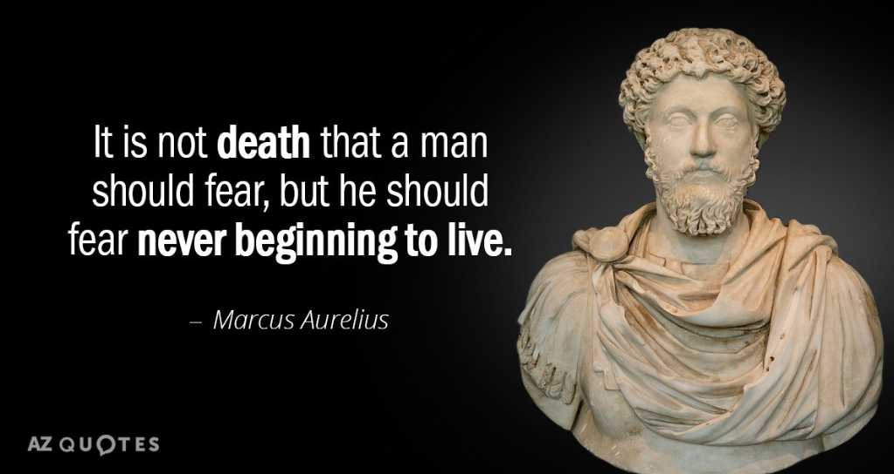

Adopt These Five Daily Habits & Watch Your Life Transform Like a Caterpillar to a Butterfly
Warning, side-effects include: happiness, confidence, contentment, focus, energy and excitement
Did you get a chance to download your free copy of “Meditations” – by Caesar Marcus Aurelius? (the link is at the bottom of this post for those who missed it).
Marcus Aurelius was considered one of the greatest Caesars of all time, but he was also a wise philosopher of Stoicism… a popular form of philosophy because it reads just as true today as it did 2000 years ago.
His book ‘Meditations’ was never meant to become one of the greatest self help books of all time… as it was a collection of his private journals. This is my third post on this amazing book because it’s so incredibly powerful.
If you haven’t had a chance to read your complimentary ebook version yet, here are five Stoic practices that will steer your life towards success and fulfillment very quickly (you can either watch a video taken from my favorite Stoic YouTube channel or you read the written version below).
1. Contemplation of the sage
In Marcus Aurelius’ ‘Meditations’, he would often ask himself the question: “What would Zeno do?”.
It doesn’t matter who you look up to, whether it’s God, Jesus, Buddha, Allah… for Caesar Aurelius it was Zeno. For you, it can be anything. If you’re an atheist, it can be anyone – but be sure that this person has the traits and characteristics that you want to have. If you can’t think of a particular person with your ideal traits, create that person in your mind very clearly.
When you come to a difficult decision, ask yourself “what would xxxxx do in this position?”. When you do this, you disassociate yourself from the decision and block your emotions from dictating a knee-jerk response.
2. A view from above
Put very simply, view yourself from a third person… similar to a video game.
Take a view of watching yourself in the third person as if you were watching a character in a computer game. This disassociates yourself form your emotions.
When there’s times you want to procrastinate, watching yourself as a video game character gives you much more control over the actions you take.
The computer game analogy is great because nobody ever played a computer game for a moment, ‘died’ and then gave up. With a computer game, whole the idea of the game is to ‘die’ then try again, then again, and again until you succeed. Yet all too many people in the ‘game of life’ try and fail once or twice then give up completely.
If you were playing an exciting video game – would you park your character on the sofa and spend the weekend eating cheetos and bingeing on Netflix?
Instead of being at the whims of your emotions or energy levels – take control of yourself from a third person and do the things that your ‘ideal you’ would do.
Another way of looking at this is to zoom-out so you can see yourself from above, then zoom out further so you can see yourself within your own town or city, and so on until you’ve zoomed out to see the whole planet. The purpose of this practice is to see everything in perspective. When you see the harsh realities of how others live their lives and the struggles they endure – you’ll begin to see your own problems with better perspective.

3. Exercise
Marcus Aurelius noticed the importance of exercise and its effect on the mind. The body and mind are interconnected, so mastery of the mind also calls for mastery of your body.
An added benefit is looking slimmer, healthier and more attractive… which builds confidence.
4. Meditation
The benefits of meditation are immense. But a noteworthy advantage is that you can control your thoughts, which means you control your emotions. When you control your emotions you can choose to be happy, motivated and positive… which leads to a deep fulfillment.
5. Reviewing the day/Journaling
If you can get into the habit of it, journaling will change your life. But if journaling just isn’t your thing, spend at least five minutes of solid contemplation in the evening to assess what you did that day.
The purpose of this habit is to assess your daily performance so you can make improvements.
When you go to bed, think about your day… what happened, what went well, what didn’t go well, what did you fail to do?
Congratulate yourself for the tasks you completed. When you congratulate yourself, you’re rewarding a part of the brain that will try to make it a habit.
Journaling or reviewing your day will help you pinpoint the where you went wrong with problems. That way, the next time you encounter that same problem, you’ll be equipped to deal with it better. If you don’t journal or review your actions, your mind will make rationalizations for why it happened and you won’t be able to tackle the real reason you dealt with it poorly.
You’ll also be able to track your progress towards your goals and how far you need to go to reach those goals.
If you can force yourself to practice at least two or three of the highly effective Stoic practices daily, you’ll notice a change in your life very quickly.
– You’ll feel generally happier
– You’ll live a fulfilled life
– You’ll get more done and become a more effective person
– Worrying will severely diminish because things will feel like they’re taken care of
– Less stress
– You’ll be content with your time because you’ll be wasting less time
– You’ll become more disciplined and focused
– You’ll have more energy because your emotions won’t be effecting your decision making
– Increased momentum towards your goals
– More excitement in life because you’re being the best person you can be
– Greater confidence comes naturally
So, go on! Try it out for a month and let me know in the comment section how your life changed.
[Click here to download your free version of ‘Meditations’ by Caesar Marcus Aurelius]